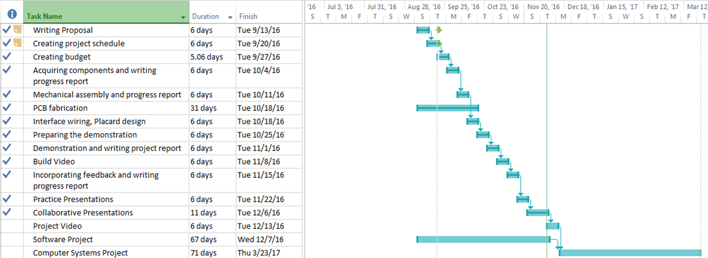

Week 4
Proof of Purchase

- Budget can be downloaded here here.
Project Gantt Chart 
It’s the sixth week into our project, we’ve purchased a Raspberry Pi, a Raspberry Pi starter kit and a USB webcam. We’ve tested all parts for functionality. However, the biggest challenge was trying to get the webcam to work with the Raspberry Pi. The webcam we bought was designed to be used on Windows and Linux, while Raspberry Pi runs a modified version of Linux operating system. We encountered critical driver issues and had to search for different drivers and workarounds to get the webcam to work with the Raspberry Pi. I’ve added the unboxing, assembly, and power-on video for the Raspberry Pi on my GitHub link. On the software side, we’ve planned out the basic Graphical-User-Interface (GUI) and the application requirements for our project. We also have a basic framework done for the app. So far we’ve invested well over $200 into this project. We have all the parts we need to be able to finish this project. We are currently on-track with our project schedule.

Placard: download the Publisher file here

It’s the tenth week into the project, and I am almost done with my hardware project. I am currently able to generate my own QR Codes and scan them into raspberry pi. My final budget came upto to being upwards of $200 which was acceptable as my initial predictiton was also $200. My next challenge will be to timestamp every entry read by the webcam. As well as to to ignore duplicate or redundant values. Since I'm using an older webcam it does have trouble recognizing more complex QR Codes. However, this is not enough of a problem to cause any major functionality problems as I can use barcodes with less amounut of pixels to resolve this.
It’s the eleventh week into the project, I am scanning QR Codes and exporting them into a file. This file can then be uploaded to a database to add scanned items into the database. My final budget stills total approximatley $200. I sm still trying to figure out how to add a timestamp to every entry scanned by the webcam. As well as to to ignore duplicate or redundant values. I am on track with this project
It’s the twelweth week into the project, I am currently able to scan QR Codes on the raspberry pi and export them into a file. Morever, I can generate my own QR codes. My budget has expanded to $150 now. This $10 addtion includes the purchase of a portable mini speaker which I will be adding to my Raspberry Pi. I am trying make my project more user-friendly by providing feedback for scanning QR codes. I am currently figuring out how to make the mini speaker "beep" as it it scans a QR code. As well as to to ignore duplicate or redundant values. I am on track with this project.
Presentation: download the Powerpoint here